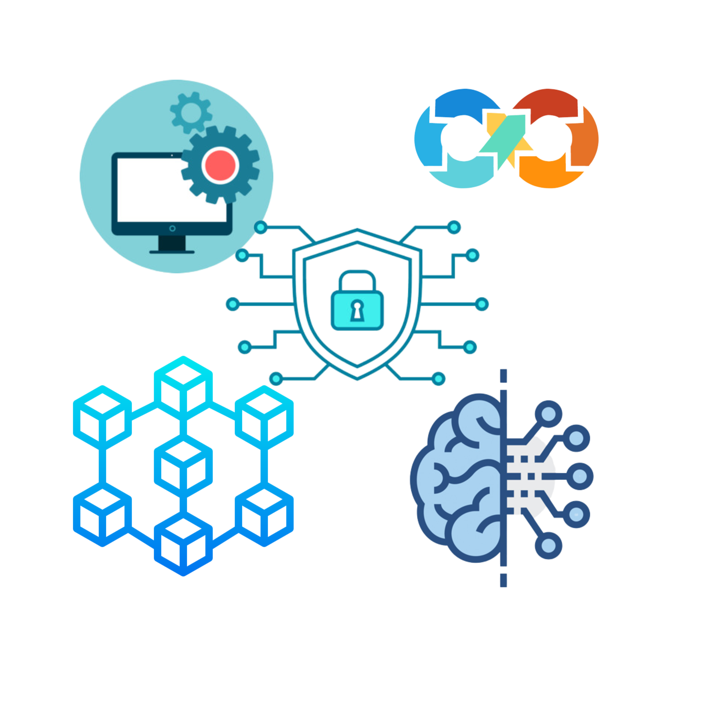

Tresor Kaseka
ContactHi!
I'm Tresor Kaseka
I am a student in computer science, I am passionate about
everything related to computer science and new technologies, such
as AI, web3.0 and more.
Skill and technologies
Some skill and technologies i want to master
Why
Why i choose computer science
Since my childhood,i have been passionate about computer science
high technology in general.
This passion led me to explore various fields such as programming
software design and computer engineering.
Today,i continue to feed this passion by constantly
learning and following the latest technological trends.
My plan

I want to job as a software engineer,cloud engineer,devops,ML engineer,blockchain engineer and cyberpolice
My philosophie
Kaizen
Kaizen is a continuous improvement process based on concrete,simple and inexpensive actions.
It is first and foremost a state of mind that requires the involvement of all stakeholders.
As a philosophy,kaizen promotes a state of mind where small incremental changes create an impact over the time.